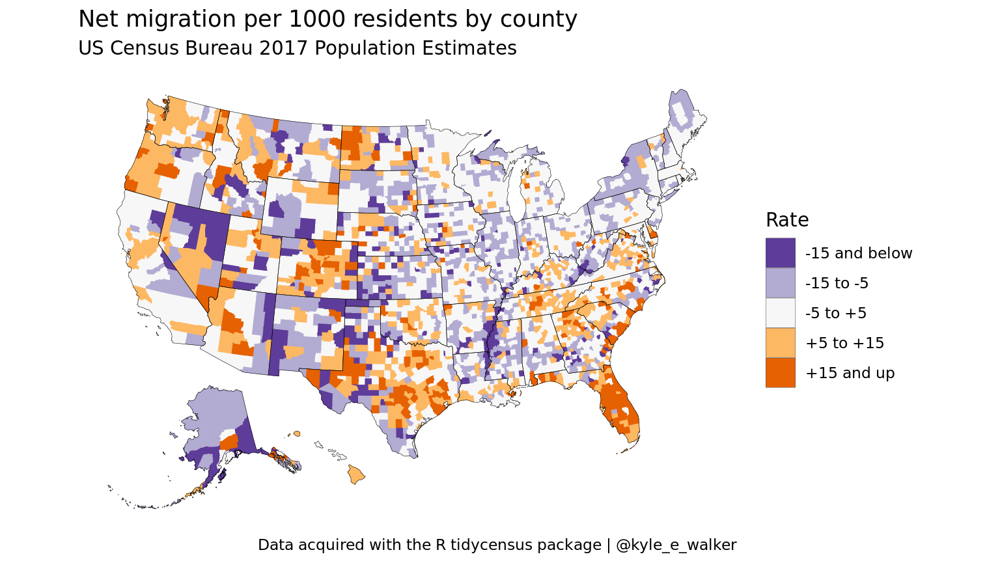
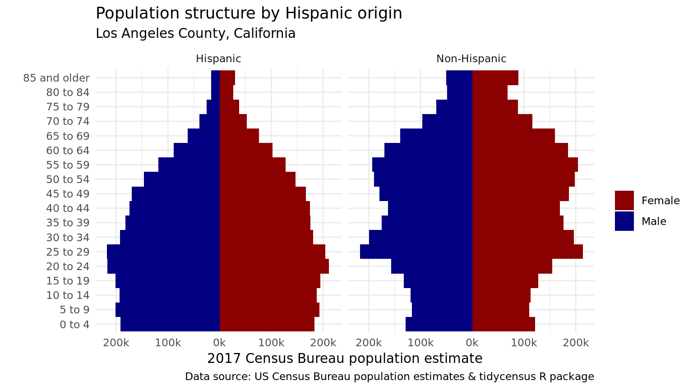

The main intent of the tidycensus package is to return population characteristics of the United States in tidy format allowing for integration with simple feature geometries. Its intent is not, and has never been, to wrap the universe of APIs and datasets available from the US Census Bureau. For datasets not included in tidycensus, I recommend Hannah Recht’s censusapi package (https://github.com/hrecht/censusapi), which allows R users to access all Census APIs, and packages such as Jamaal Green’s lehdr package (https://github.com/jamgreen/lehdr) which grants R users access to Census Bureau LODES data.
However, tidycensus will ultimately incorporate a select number of Census Bureau datasets outside the decennial Census and ACS that are aligned with the basic goals of the package. One such dataset is the Population Estimates API, which includes information on a wide variety of population characteristics that is updated annually.
Population estimates are available in tidycensus through the get_estimates() function. Estimates are organized into products, which in tidycensus include "population", "components", "housing", and "characteristics". The population and housing products contain population/density and housing unit estimates, respectively. The components of change and characteristics products, in contrast, include a wider range of possible variables.
By default, specifying "population", "components", or "housing" as the product in get_estimates() returns all variables associated with that component. For example, we can request all components of change variables for US states in 2017:
library(tidycensus) library(tidyverse) options(tigris_use_cache = TRUE) us_components <- get_estimates(geography = "state", product = "components") us_components
## # A tibble: 624 x 4
## NAME GEOID variable value
## <chr> <chr> <chr> <dbl>
## 1 Mississippi 28 BIRTHS 35978
## 2 Missouri 29 BIRTHS 71297
## 3 Montana 30 BIRTHS 11618
## 4 Nebraska 31 BIRTHS 25343
## 5 Nevada 32 BIRTHS 35932
## 6 New Hampshire 33 BIRTHS 12004
## 7 New Jersey 34 BIRTHS 99501
## 8 New Mexico 35 BIRTHS 23125
## 9 New York 36 BIRTHS 222924
## 10 North Carolina 37 BIRTHS 119203
## # … with 614 more rowsThe variables included in the components of change product consist of both estimates of counts and rates. Rates are preceded by an R in the variable name and are calculated per 1000 residents.
unique(us_components$variable)
## [1] "BIRTHS" "DEATHS" "DOMESTICMIG"
## [4] "INTERNATIONALMIG" "NATURALINC" "NETMIG"
## [7] "RBIRTH" "RDEATH" "RDOMESTICMIG"
## [10] "RINTERNATIONALMIG" "RNATURALINC" "RNETMIG"Available geographies include "us", "state", "county", "metropolitan statistical area/micropolitan statistical area", and "combined statistical area".
If desired, users can request a specific component or components by supplying a character vector to the variables parameter, as in other tidycensus functions. get_estimates() also supports simple feature geometry integration to facilitate mapping. In the example below, we’ll acquire data on the net migration rate between 2018 and 2019 for all counties in the United States, and request shifted and re-scaled feature geometry for Alaska and Hawaii to facilitate national mapping.
net_migration <- get_estimates(geography = "county", variables = "RNETMIG", geometry = TRUE, shift_geo = TRUE) net_migration
## Simple feature collection with 3142 features and 4 fields
## geometry type: MULTIPOLYGON
## dimension: XY
## bbox: xmin: -2100000 ymin: -2500000 xmax: 2516374 ymax: 732103.3
## CRS: +proj=laea +lat_0=45 +lon_0=-100 +x_0=0 +y_0=0 +a=6370997 +b=6370997 +units=m +no_defs
## # A tibble: 3,142 x 5
## GEOID NAME variable value geometry
## <chr> <chr> <chr> <dbl> <MULTIPOLYGON [m]>
## 1 01001 Autauga Cou… RNETMIG 4.56 (((1269841 -1303980, 1248372 -1300830, 124…
## 2 01009 Blount Coun… RNETMIG 1.12 (((1240383 -1149119, 1222632 -1143475, 120…
## 3 01017 Chambers Co… RNETMIG -7.75 (((1382944 -1225846, 1390214 -1235634, 138…
## 4 01021 Chilton Cou… RNETMIG 4.94 (((1257515 -1230045, 1259055 -1240041, 126…
## 5 01033 Colbert Cou… RNETMIG 5.97 (((1085910 -1080751, 1085892 -1080071, 108…
## 6 01045 Dale County… RNETMIG -1.44 (((1382203 -1366760, 1387076 -1400145, 138…
## 7 01051 Elmore Coun… RNETMIG 1.13 (((1278144 -1255151, 1279961 -1256403, 130…
## 8 01065 Hale County… RNETMIG -7.21 (((1176099 -1258997, 1172005 -1264523, 117…
## 9 01079 Lawrence Co… RNETMIG 2.00 (((1178216 -1055420, 1179636 -1066254, 118…
## 10 01083 Limestone C… RNETMIG 26.4 (((1197770 -1018013, 1199180 -1017791, 120…
## # … with 3,132 more rowsWe’ll next use tidyverse tools to generate a groups column that bins the net migration rates into comprehensible categories, and plot the result using geom_sf() and ggplot2.
order = c("-15 and below", "-15 to -5", "-5 to +5", "+5 to +15", "+15 and up") net_migration <- net_migration %>% mutate(groups = case_when( value > 15 ~ "+15 and up", value > 5 ~ "+5 to +15", value > -5 ~ "-5 to +5", value > -15 ~ "-15 to -5", TRUE ~ "-15 and below" )) %>% mutate(groups = factor(groups, levels = order)) ggplot() + geom_sf(data = net_migration, aes(fill = groups, color = groups), lwd = 0.1) + geom_sf(data = tidycensus::state_laea, fill = NA, color = "black", lwd = 0.1) + scale_fill_brewer(palette = "PuOr", direction = -1) + scale_color_brewer(palette = "PuOr", direction = -1, guide = FALSE) + coord_sf(datum = NA) + theme_minimal(base_family = "Roboto") + labs(title = "Net migration per 1000 residents by county", subtitle = "US Census Bureau 2019 Population Estimates", fill = "Rate", caption = "Data acquired with the R tidycensus package | @kyle_e_walker")

The fourth population estimates product available in get_estimates(), "characteristics", is formatted differently than the other three. It returns population estimates broken down by categories of AGEGROUP, SEX, RACE, and HISP, for Hispanic origin. Requested breakdowns should be specified as a character vector supplied to the breakdown parameter when the product is set to "characteristics".
By default, the returned categories are formatted as integers that map onto the Census Bureau definitions explained here: https://www.census.gov/data/developers/data-sets/popest-popproj/popest/popest-vars/2017.html. However, by specifying breakdown_labels = TRUE, the function will return the appropriate labels instead. For example:
la_age_hisp <- get_estimates(geography = "county", product = "characteristics", breakdown = c("SEX", "AGEGROUP", "HISP"), breakdown_labels = TRUE, state = "CA", county = "Los Angeles") la_age_hisp
## # A tibble: 210 x 6
## GEOID NAME value SEX AGEGROUP HISP
## <chr> <chr> <dbl> <chr> <fct> <chr>
## 1 06037 Los Angeles County, C… 10039107 Both se… All ages Both Hispanic …
## 2 06037 Los Angeles County, C… 5157137 Both se… All ages Non-Hispanic
## 3 06037 Los Angeles County, C… 4881970 Both se… All ages Hispanic
## 4 06037 Los Angeles County, C… 579856 Both se… Age 0 to 4 ye… Both Hispanic …
## 5 06037 Los Angeles County, C… 236459 Both se… Age 0 to 4 ye… Non-Hispanic
## 6 06037 Los Angeles County, C… 343397 Both se… Age 0 to 4 ye… Hispanic
## 7 06037 Los Angeles County, C… 600191 Both se… Age 5 to 9 ye… Both Hispanic …
## 8 06037 Los Angeles County, C… 229438 Both se… Age 5 to 9 ye… Non-Hispanic
## 9 06037 Los Angeles County, C… 370753 Both se… Age 5 to 9 ye… Hispanic
## 10 06037 Los Angeles County, C… 601542 Both se… Age 10 to 14 … Both Hispanic …
## # … with 200 more rowsWith some additional data wrangling, the returned format facilitates analysis and visualization. For example, we can compare population pyramids for Hispanic and non-Hispanic populations in Los Angeles County:
compare <- filter(la_age_hisp, str_detect(AGEGROUP, "^Age"), HISP != "Both Hispanic Origins", SEX != "Both sexes") %>% mutate(value = ifelse(SEX == "Male", -value, value)) ggplot(compare, aes(x = AGEGROUP, y = value, fill = SEX)) + geom_bar(stat = "identity", width = 1) + theme_minimal(base_family = "Roboto") + scale_y_continuous(labels = function(y) paste0(abs(y / 1000), "k")) + scale_x_discrete(labels = function(x) gsub("Age | years", "", x)) + scale_fill_manual(values = c("darkred", "navy")) + coord_flip() + facet_wrap(~HISP) + labs(x = "", y = "2019 Census Bureau population estimate", title = "Population structure by Hispanic origin", subtitle = "Los Angeles County, California", fill = "", caption = "Data source: US Census Bureau population estimates & tidycensus R package")
